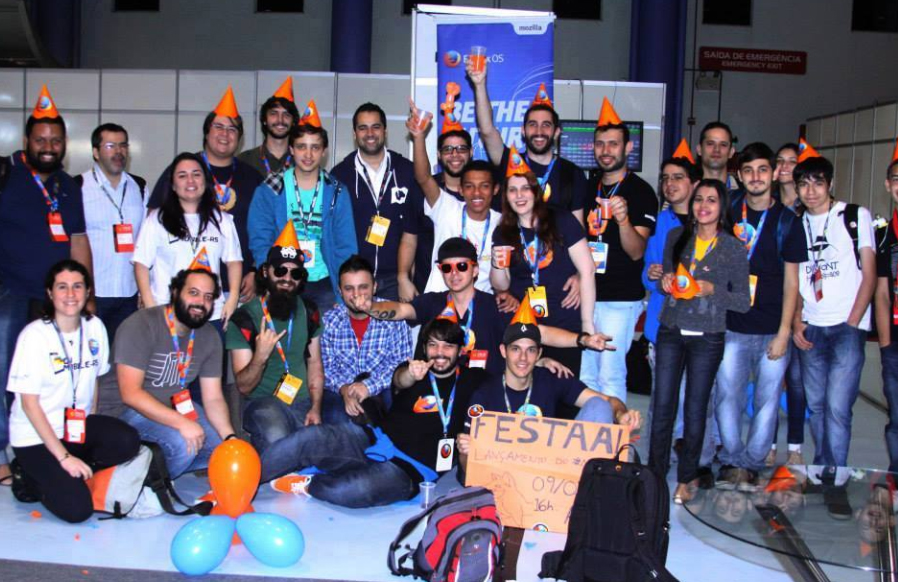

Comunidade de Software Livre e a Mozilla
Vamos fazer do mundo um lugar melhor?

Rafael Tavares
- E-mail: rafaeltavaresandrade@gmail.com
- Twitter: @rafasmusic
- Github: github.com/rafastavares
- Mozillians: mozillians.org/u/rafasmusic/
- Site: rafaeltavares.co
O QUE É O SOFTWARE LIVRE?
SOFTWARE LIVRE é aquele que possibilita quatro liberdades:
- 01 - Liberdade de executar o programa para qualquer propósito;
- 02 - Liberdade de estudar o software;
- 03 - Liberdade de A liberdade de redistribuir cópias do programa de modo que você possa ajudar ao seu próximo;
- 04 - A liberdade de modificar o programa e distribuir estas modificações, de modo que toda a comunidade se beneficie.
O que é Comunidade:
Comunidade é um grupo local, de tamanho variável, integrado por pessoas que ocupam um território geograficamente definido e estão irmanados por uma mesma herança cultural e histórica.Principais Fundações ligadas ao Software Livre
- Apache Software Foundation
- Eclipse Foundation
- Linux Foundation
- GNOME Foundation
Mozilla Foundation
- Electronic Frountier Foundation (EFF)
Mozilla Foundation
Você conhece a Mozilla?
Manifesto Mozilla
Nossos 10 princípios
01
A Internet é parte integral da vida moderna - componente chave para educação, comunicação, colaboração, negócios, entretenimento e para a sociedade como um todo.
02
A Internet é um recurso público global que deve permanecer aberto e acessível.
03
A Internet deve enriquecer a vida das pessoas como seres humanos.
04
A segurança e a privacidade das pessoas na Internet são prioridades, e não devem ser tratadas como opções.
05
As pessoas precisam ter a capacidade de moldar a Internet e suas experiências com ela.
06
A efetividade da Internet como um recurso público depende de interoperabilidade (protocolos, formato de dados e conteúdo), inovação e participação descentralizada mundialmente.
07
Software livre e aberto promovem o desenvolvimento da Internet como um bem público.
08
Processos transparentes e com a colaboração da comunidade resultam em confiança e coletividade.
09
O envolvimento de empresas no desenvolvimento da Internet pode trazer muitos benefícios, mas é preciso ter um equilibrio entre os lucros e a preocupação com as pessoas.
10
Ampliar o benefício público promovido pela Internet é um importante objetivo ao qual vale dedicar tempo, atenção e compromisso.
E a Mozilla Brasil?

Alguns de nossos projetos...
Firefox
Thunderbird
Webmaker
Firefox OS
MDN
Firefox Student Ambassadors
Suporte Mozilla (SUMO)
WoMoz
Nós precisamos de você!
Quer saber como ajudar?
Instalando o Firefox =)
Ajudando usuários do mundo todo via twitter
Localização
Organização de eventos
Desenvolvimento
Participando da nossa lista de e-mails
Reportando erros
Recrutando amigos para fazer parte da comunidade
O que a comunidade anda fazendo...
Campus Party
FISL
Maker Party Week SP

Webmaker PAPI Unit
BrazilJS

Palestras por todo o Brasil

Oficina de Camisetas
Meetup Brasil
Encontro da Comunidade Mozilla Brasil 2014
Front in Maceió
Alguns Links
- Mozilla -www.mozilla.org
- Mozilla Brasil -www.mozillabrasil.org
- FB | Mozilla Brasil -fb.com/mozillabrasil
- Lista de e-mails -lists.mozilla.org/listinfo/community-brasil
- Mozilla Developer Network -developer.mozilla.org
- Webmaker -webmaker.org
- SUMO -support.mozilla.org/pt-BR/home/
- SUMO - Exército dos Incríveis -support.mozilla.org/pt-BR/get-involved/army-of-awesome
- Reveal.JS -github.com/hakimel/reveal.js
- Design - Luigui Delyer